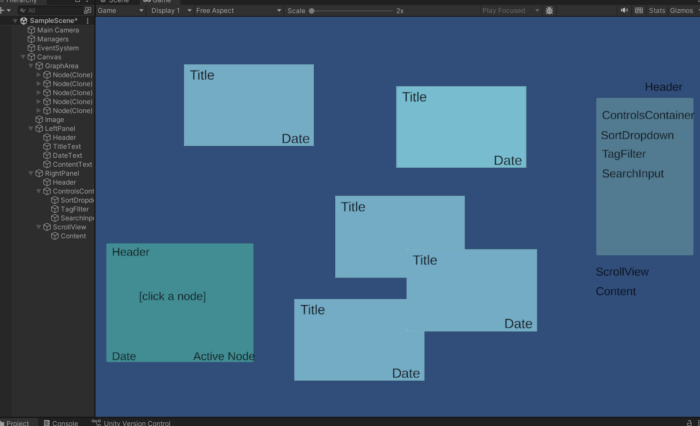
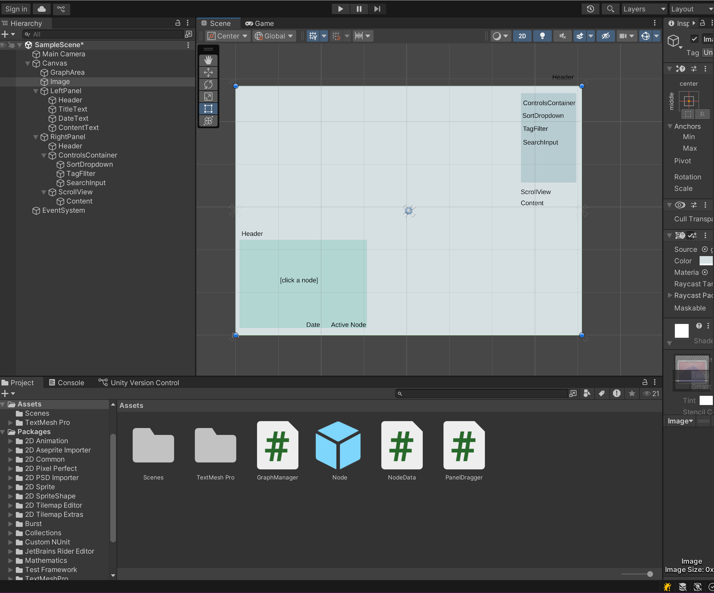

NodeLink is an archive that presents a way to explore ideas
and notes in a way that differs from typical
notetaking applications. By introducing friction to the
interface on purpose, the user is more likely to feel
that the notes are more personal and memorable to them once written.
>> Try it here!
NodeLink is a spatial research archive. It presents research and thoughts as a dense field of interconnected nodes. The notes importance emerges through interaction, not hierarchy, and navigation is very exploratory. It uses real design system logic, such as components, variants, tags, and states.
The project is fairly simple in terms of technology. It was distributed via and executable and simultaneously hosted on itch for demonstration purposes.
Unity was used for the UI layout, configuration, and deployment. Interaction and runtime behavior
were implemented in C# scripts, integrated with custom behavior to make the app behave as planned.
This project was developed entirely in Unity and Unity's code editor, utilizng the UI and canvases included in Unity's base kit. First, prefabs were assembled. Then, behavior was defined in scripts, attached to a larger manager, and finally deployed as a full application as an executable, as well as on itch.io.
Difficulties arose in the form of edge cases, unwanted spawn points, and user experience considerations that only became apparent later in the work. Additionally, getting used to the Unity UI features took a bit of time to fully learn and manipulate. Conceptually, the way I drew points and calculated tag weight in the system per frame compared every node to every other node, which meant performance would degrade linearly at high counts. However, this issue only arose in testing, as the user would have to exceed 200 nodes to even start impacting the system.

